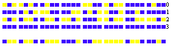

We have seen that the number of possibilities for the game of parquet with a board of 64 squares, is equal to 264. Decreasing this number 264 by one, one gets the number of seeds which would cover the chessboard, assuming one seed on the first square, two on the next square, four on the next one, and so one, doubling until the sixty-fourth square. The number 264-1 is an example of a Mersenne number which we discussed in note VI of Volume I. In this respect Mr. are respectively divisible by and verified that the other numbers 2n-1 for 24 values of prime n up to 257, have no divisors less than On our trip to Rome, with the good will and generosity of his Excellency Prince B. Boncompagni, we consulted two precious volumes of manuscripts containing more than forty letters from Fermat to Mersenne. In a letter dated from Toulouse, April 7, 1643, one finds the following text: «You ask whether the number is prime or not, and for a method to discover, within one day, whether it is prime or composite. To this question, I answer that the number is composite and is the product of these two primes which are primes. I remain always, reverend Father, your very humble and very affectionate servant, Fermat.» To appreciate the efficacy of this method, one will observe that no extensive tables of prime numbers then existed and that the six digits numbers were not to be found in existing tables. Also there does not exist any known
method to quickly decompose twelve digit numbers into primes. If we compare with more modern methods, we see Gauss, in the sixth section of Disquitiones arithmeticae, proposing several methods to distinguish prime numbers from composite ones, and to factor these into primes. It is, adds Gauss, one of the most important and useful problems of Arithmetic (no 329). He takes as an example the number which, by dividing out the factors 32, 5, 7, reduces to a six digit number in Burckhardt�s tables: Gauss� methods would be unable to solve the problem posed by Mersenne to Fermat. If one is not able to factor Mersenne numbers by the use of the various methods known today, one can verify that those numbers are prime by applying the following analog of Wilson�s theorem. For the number p=24q+3-1 to be a prime, it is necessary and sufficient that the congruence In other words, one forms the sequence of numbers Vn such that, from the third one, any number is equal to the square of the previous one minus 2; one removes multiples of p, and if the number of rank 4q+2 is zero, p is prime. We indicated a way of computing using binary numbers which leads to the construction of a procedure appropriate to the verification of large primes. In this system, the multiplication consists only in the longitudinal displacement of the multiplicand; moreover, it is clear that the remainder of the division of 2m by 2n-1 equals to 2r, r being the remainder of the
division of m by n; so, in the case of 231-1, for example, it will suffice to operate on numbers with at most 31 binary digits. Fig 104 gives the computation of V26 derived from the computation of V25 by means of the formula the blue squares representing the units of the different order of magnitude of the binary  system, and the yellow squares representing zeroes. The first line is the residue V25; the first thirty-one lines numbered from 0 to 30 represent the square of V25; the four lines numbered 0, 1, 2, 3 at the bottom of the figure give the addition of the units of each column, with the carries; one subtracts 2 or the unit of the second column to the right; finally the last line is the residue of V26.
Fig 105 shows all the residues from V1 to V30; the last line consisting of zeroes shows us that 231-1 is prime. For verification of Mersenne numbers of the form 24q+1-1, one computes in the same way the series Again, the Wilson type theorem: For p = 24nq+2n+1-1 to be a prime, it is necessary and sufficient that Fermat believed that the expression gave only prime numbers. He wrote to Mersenne
on December 25 1640: «If I can determine the basic reason why are prime numbers, I feel that I would find very interesting results, for I have already found marvelous things [along these lines] which I will tell you about later.». Euler was the first to prove that Fermat�s conjecture was false by showing that F5 is divisible by 641. Through the use of a method indicated by Fermat himself, Euler proved: The prime divisors of 24q+1 are of the linear form 8hq+1. For example, it is sufficient to try to divide F5 by the numbers to find with Euler We have shown (Académie de Turin, 27 January 1878), that the prime divisors of 24q+1 are of the form 16hq+1. The use of that theorem decreases by more than half the labor of searching for divisors, and so for example, it is unnecessary (Euler and M. Tchebychef1), to try to divide by the four primes 193, 257, 449 and 577. Similarly, the first possible divisor for F12 is 7·214+1 or To determine whether a number Fn is prime or not, one forms the series such that every one equals the square of the previous one minus two, discarding the multiples of Fn; for Fn to be prime, it is necessary that the residue of rank 2n-1 be zero. We did the computation for n=6, and found by that way that the twenty digit number 264+1 is composite; (Sylvester's journal, Vol. II, p. 238). Using that result (1) TCHEBYCHEF. Number Theory, (in Russian), p. 182. - St. Petersburg, 1849. - LEBESGUE. Exercices d'Analyse numérique. p. 94. - Paris, 1859.
and the simplification indicated above, to find divisors, Mr. Landry, at the age of 82 , after several months� work obtained the following result as one can verify now in few minutes. Further, Messers. Landry and LeLasseur proved separately, that the second factor is prime. Modifying Fermat�s conjecture, we hypothesize «All the primes and the only primes of the form 2n + 1 are found in the sequence On the other hand, Eisenstein conjectured (perhaps he has a proof:) «There are infinitely many prime numbers of the form 22n + 1;» There are no known proofs of these two propositions. |